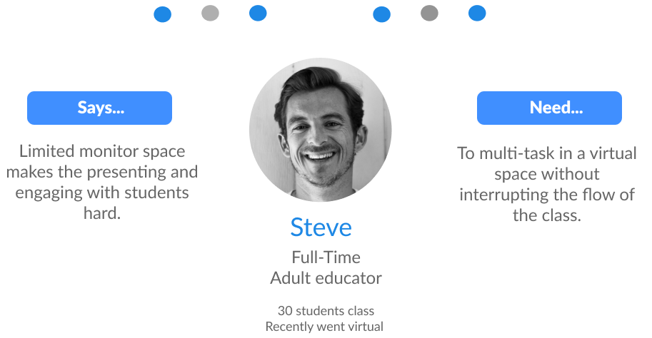

Overview
This group project was about working on behalf of a product or service to identify and solve a UX need. My team and I decided to pick Zoom because it is currently an important communication platform tool. We explored in depth and found some UX issues that seriously needed some improvement.
In the context of a global pandemic, teachers and students have been forced to transform Zoom into a virtual classroom and are meeting limitations of the application that was initially designed for large-scale passive webinars or small-scale casual events…
We recognize there are many types of teachers, however for the purpose of our research, we did not focus on teachers that taught children because they physically need structured classroom environment for learning. Instead our team focused on further and higher educators with 10-30 students, where the aim is to maximize student interactions.
Problem
We started off our preliminary research with users interviews and contextual inquiries and found that this specific group of educators felt overwhelmed by the requirement of having to interact with both side chats and emoji reactions, while simultaneously managing their notes and sharing their screen with limited monitor space.
User

User Journey
Pain points
During our research, we surveyed around 18 teachers and students.
Now let's go more in depth with the painpoints of our users...
1) Limited Monitor Space
"When in screen share, you can't be responsive to students. They're not easily visible." — Jason E.
One of the problems that we came across was that instructors had limited space on their monitors to give a presentation, and gauge students' reactions at the same time.

When instructors share their screen, they now have a limited view of the students because they can only display a few screens at a time. Say there are 16 students in the classroom, only 4-5 of those students can be seen on the instructor’s screen. This makes it difficult to monitor everyone's reactions in the room.
As you can see in the image below, the instructor has his presentation slides opened, his notes, chat box, student videos, the tool bar and any relevant applications for his lecture. It’s a lot to manage at one time.
2) Chat Engagement and Distraction
"Sometimes I have to minimize the chat box because it can get distracting." — Hannah P.

Generally speaking, when instructors are lecturing, they want students to chat because they consider it to be a sign of engagement. Although they want students to be engaged, monitoring the chat for questions while presenting can be difficult. The chats can be filled with random comments, jokes, and questions which can make it hard for instructors to filter out while presenting. Some instructors even find the chat distracting and minimize the chat altogether.
In the image below a teacher tries to monitor both chat and presentation points at once.